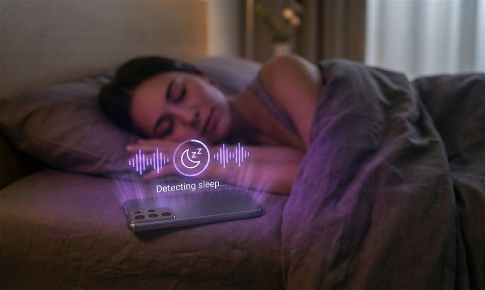

Set a 20-minute nap. Naptime waits until you actually fall asleep, then starts the countdown, so settling in does not steal the rest you planned.
Get Naptime on Google PlayOne-time purchase. No account. No anonymous uploads. Session data stays on your device.

Normal timers start while you are still awake. Naptime uses motion from your Android phone on the mattress to estimate sleep onset, then begins the countdown.
A 20-minute nap should mean roughly 20 minutes of actual sleep, not a short rest after a long wind-down.
Your sleep sessions are personal. The paid app keeps nap and sleep history on your phone and does not send anonymous session uploads.
Add a latest wake-up time. If sleep takes too long or is not detected, Naptime still alarms by your cutoff.
Enough insight to learn patterns without turning rest into a complicated system.
Naptime does not soundtrack your sleep. It times your nap after sleep begins.
Nap history, overnight sessions, tags, ratings, and movement-based results stay on-device.
No account. No anonymous uploads. Delete local data from Settings or by uninstalling the app.
Get Naptime on Google Play